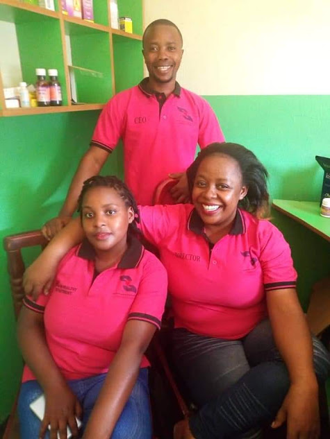
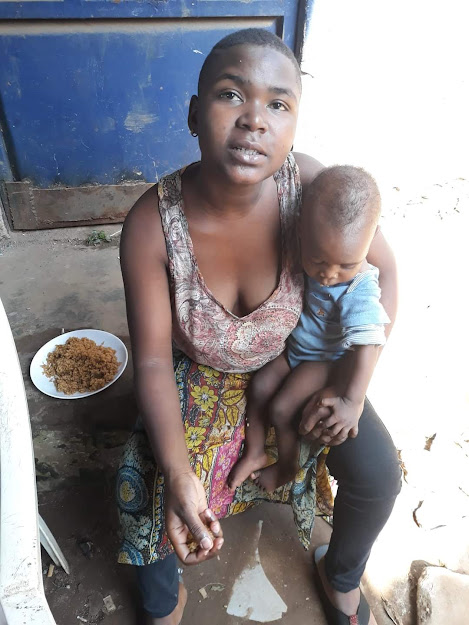

Impact at a Glance
We drive impact by empowering vulnerable families, the community groups and local leaders who support them, and the district governments that sustain the policies and systems that protect them. We rely on real‑time data, human insights, and proven evidence to expand health services, improve school enrollment, end hunger, and strengthen resilience for vulnerable communities across Uganda.
VULNERABLE COMMUNITIES WE SERVE
Impact by Area
We drive impact by designing solutions with and for vulnerable children, youth, women, elderly people, and the community volunteers, local organizations, and district governments that support them – using data to improve health outcomes, educational access, food security, and protection services.
Specifically our solutions drive impact in three areas:

Health Seeking & Service Access
Many vulnerable families in Uganda face delays in accessing healthcare, education, and protection services. GROW empowers communities with real‑time SMS alerts on clinic hours, school enrollment, immunization drives, and HIV testing – helping them make informed decisions. Families learn key practices: timely vaccination, nutrition, child protection reporting, and psychosocial support. We share community feedback with district governments to make services more responsive.
Quality & skilled support
A significant share of vulnerability in Uganda’s communities stems from gaps in child protection, psychosocial care, inconsistent support for vulnerable families, and limited emergency response during health crises, food shortages, or natural disasters. FIELDS builds the capacity of frontline community volunteers, social workers, caregivers, and government officers to deliver timely, hands‑on support through continuous, simulation‑based training that takes place in communities and at local service hubs. We share data on volunteer performance and family outcomes with district social welfare and health managers, helping them track and address skills and knowledge gaps on a real‑time basis.

Sustainable Financing
Our vision of an “end game” at scale is our district government partners, together with community‑based organizations and local leaders, leading and sustainably financing cost‑effective innovations within Uganda’s health, education, and social protection systems. We achieve this by helping them better budget for high‑impact solutions that improve healthcare access, school enrollment, child protection, and food security – while generating real‑time data that helps them allocate limited resources more strategically and transparently.
Data-driven impact
We combine real-time data from vulnerable families, community organizations, and service providers with deep, participatory research to help district governments, social welfare departments, and national ministries identify, monitor, and address gaps in healthcare access, school enrollment, child protection, and livelihood support.
Given the complexity of vulnerable communities' needs, we field data and insights from across a family’s journey – from crisis to stability, from hunger to food security, from isolation to community connection – to monitor the connected, yet often siloed, gaps that affect well-being and resilience. The research we conduct and the data tools we co‑design with our government partners help inform better policies, improve social services, and direct limited resources to where they are most needed. We monitor our impact on outcomes through national information systems, including the Ministry of Health's district health information systems and the Ministry of Education's school management platforms.
What can we learn from our Dashboards?
We track what vulnerable families ask us and self‑report on GROW to understand barriers to healthcare access, school enrollment, and livelihood opportunities – optimizing service referrals and better understanding the quality of community support from the family’s perspective. We also monitor how community volunteers, caregivers, and social workers are performing through FIELDS to identify gaps in critical skills, such as child protection protocols, psychosocial counseling techniques, HIV/AIDS sensitization methods, and emergency response procedures – so we can target support where it is needed most.

Influencing Decision-making through Research
Research is the backbone of how we design solutions, and our findings are guiding how district governments, community organizations, and social service providers improve health outcomes, school enrollment, child protection, and livelihood security across Uganda’s vulnerable communities.
We rely on a mixture of participatory research approaches to understand the contextual challenges facing vulnerable children, youth, women, and elderly people: Human‑Centered Design, in‑depth interviews, and implementation research.
Impact Reports
You can find our quarterly and annual impact reports below, or sign up to receive these straight into your inbox.